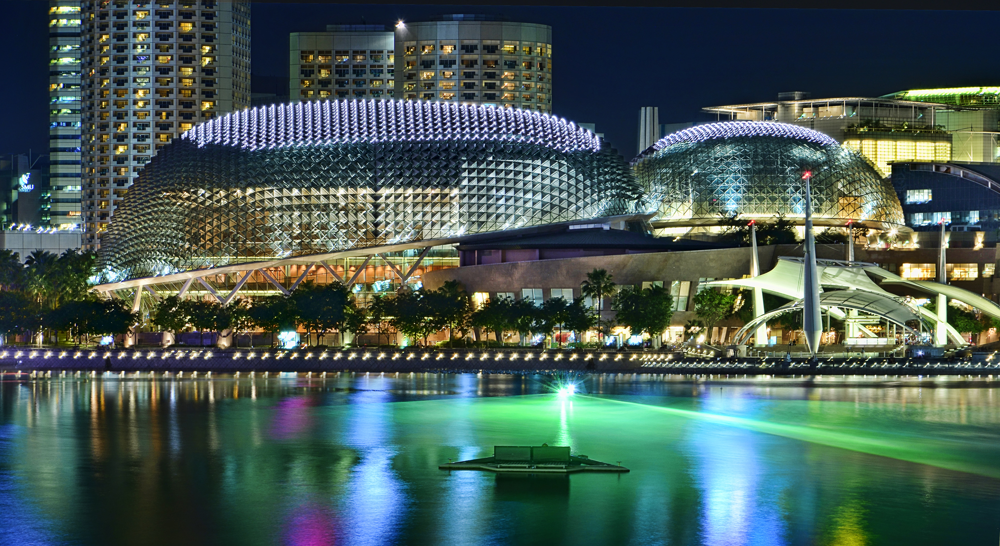

1 / 3

Marina Bay
2 / 3

Flower Dome
3 / 3

Esplanade
With a spectacular view during both the day & night, the sight of Marina Bay makes every Singaporean feel proud to call this island our home.
Crazy Rich Asians portrayed Marina Bay beautifully, with the wonderful wedding after party held at Gardens By The Bay or the engagement party at the lavishing 57th floor of Marina Bay Sands, making most of us feel more broke than ever. Fret not, because here's a guide for you to experience your own Crazy Rich Asians lifestyle without burning a hole in your pocket!

There are many things to do here! The Flower Dome & Cloud Forest are perfect places to visit in the garden if you are not interested in feeding the mosquitoes. The Flower Dome, being awarded Guinness World Record for the largest glass greenhouse, allows one to get up-close with unusual plants native to the Mediterranean region, South African savannahs as well as arid deserts. If one is interested in exotic plant species, such as pitcher plants and Venus Flytraps from around the world, the Cloud Forest is the perfect place. Designed as a lush indoor mountain with one of the world's largest waterfall and unique aerial walkways, one is able to enjoy the view of Marina Bay Waterfront. It is a great idea to visit during a very hot day because the air-conditioning in both ensures one will never feel heat again. Prices are listed in the table below for Singapore Residents & Non Residents.
Singapore Residents
| Ticket Type | Cloud Forest/Flower Dome | Both Domes |
|---|---|---|
| Adult | $12 | $20 |
| Senior Citizen (60 Years Old & Above) | $8 | $15 |
| Child (3-12 Years Old | $8 | $12 |
Non Residents
| Ticket Type | Cloud Forest/Flower Dome | Both Domes |
|---|---|---|
| Adult | $20 | $28 |
| Child (3-12 Years Old) | $12 | $15 |

Tickets to the domes can be purchased with SRV vouchers and the Flower Dome constantly have seasonal changes within. However, if one is not interested, another free activity would be to have a picnic with friends & family in the middle of the Supertree Grove and catch the Garden Rhapsody as Gardens By The Bay lights up alongside familiar tunes.


Taking a stroll down along the Singapore River can make one feel like a tourist for a day. Cycling is also another travel option along the Esplanade Walk! You can enjoy the beautiful view of Marina Bay or even take photos with the famous Merlion statue
With the same name as Fullerton hotel, One Fullerton is way more than hotel accomodation. From a list of restaurants located in One Fullerton, one can enjoy the Crazy Rich Asian life for a day while dining at places such as P.S. Cafe, OverEasy, Bistro Aseana and many more. Delicious food with amazing view, it's definitely a win-win situation.
One Fullerton is not the only mall along Esplanade Walk, with more food options at Esplanade Mall. Other than F&B Outlets, there are also free performances that goes on Esplanade Outdoor Stage depending on the schedule. Catching live band performances or dance is also a great date idea with friends, family or your significant other.

Take a trip down to The Shoppes at MBS, where rows of luxury brands stand welcoming customers. The famous floating Louis Vuitton and Apple store are both located here. Even if you are not going to purchase anything, you should definitely check out the view at these two shops. Maybe you can even sign up for one of Apple's free lessons, upgrading your technical skills with a beautiful view. Most importantly, one should not miss out the Michelin restaurants at The Shoppes, finally getting the chance to taste the famous Gordon Ramsay's recipes. Do keep a look-out for musical performances at the Sands Theatre.

Want to take a dip in Singapore's hot weather? The famous infinity pool is stationed on the 57th floor of Marina Bay Sands hotel. Swimming with a beautiful view is an experience like no other, especially when the sun sets. It is only opened to hotel guests, but visitors are able to purchase a ticket to the 57th floor to catch the view and see the famous pool from Crazy Rich Asians up-close. THe 57th floor is also home to famous restaurants CÉ LA VI and LAVO, serving amazing cuisines and alcohols. This is a must catch experience, and one can even say they are "on top of the world" there.

The Art Science Museum catches many eyes because of its unqiue and beautiful structure. Located just outside of The Shoppes at Marina Bay Sands, the Art Science Museum is a wonderful place to visit with friends. Exhibitions ongoing can be checked on their website but the most popular one would be "Future World: Where Art Meets Science", proven by the typical instagram post of everyone who visited. Aside from the exhibitions, there is a little cafe open on the 1st floor, so if you need a coffee break you know where to go!